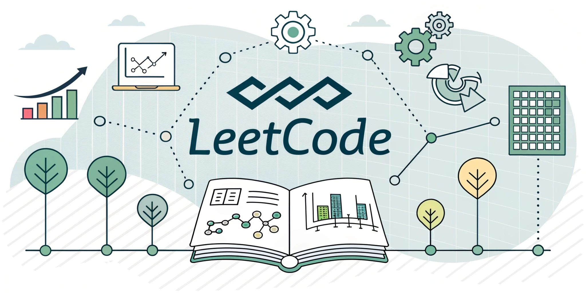

Projetos
Projects
-

Web Scraping
Script em Python que extrai manchetes, resumos e links do portal G1 usando três abordagens: regex, seletores CSS e XPath. Os dados são salvos em JSON ou CSV e podem ser filtrados por categoria ou palavra-chave.
Python script that extracts headlines, summaries, and links from the G1 news portal using three approaches: regular expressions, CSS selectors, and XPath. The data is saved in JSON or CSV format and can be filtered by category or keyword.
Ferramentas usadas
Tools Used
-

Algoritmos
Coleção de algoritmos clássicos implementados com base no livro Entendendo Algoritmos. Inclui busca binária, ordenação, grafos e programação dinâmica, com exemplos práticos e explicações.
A collection of classic algorithms implemented based on the book “Understanding Algorithms.” Includes binary search, sorting, graphs, and dynamic programming, with practical examples and explanations.
Ferramentas usadas
Tools Used
-

My Leetcodes
Repositório com soluções comentadas de desafios do LeetCode, organizadas por categoria e nível de dificuldade.
Repository with commented solutions to LeetCode challenges, organized by category and difficulty level.
Ferramentas usadas
Tools Used
-
jukebox
Bot em desenvolvimento com comandos para tocar, pausar e gerenciar músicas em canais de voz. Feito em Python com suporte a YouTube e controle de fila.
Bot under development with commands to play, pause, and manage music in voice channels. Built with Python, featuring YouTube support and queue control.
Ferramentas usadas
Tools Used